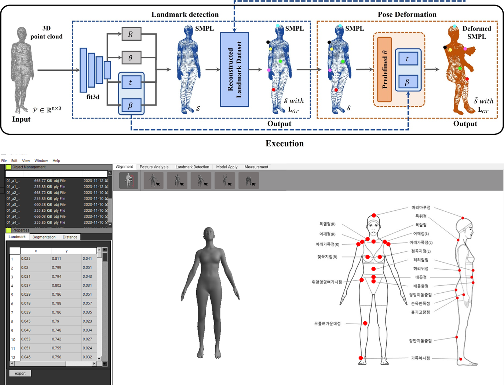

This project focused on developing a protocol for measuring 3D dynamic human body surface shapes. It provided an opportunity to work with human body scan data, posture-aware analysis, and landmark-related processing while building a deeper understanding of dynamic human body representation.

The main goal of this project was to establish a practical protocol for measuring and analyzing 3D dynamic human body surface shapes. The work involved understanding how body shape changes across posture variations and how measurement-related information could be processed more effectively.
Through this project, I gained valuable experience in human body scan processing, posture-aware data analysis, and landmark-related understanding of 3D human data. This experience later became an important foundation for my research in anthropometric landmark detection and 3D human point cloud analysis.
This project strengthened my understanding of 3D human body data and gave me practical experience in handling posture variation and measurement-oriented analysis. It also laid the groundwork for my later research in 3D anthropometric landmark detection.